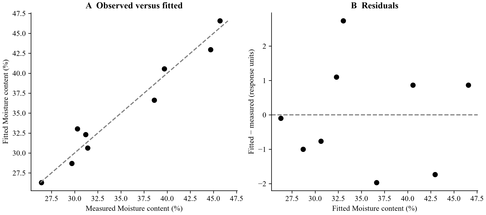
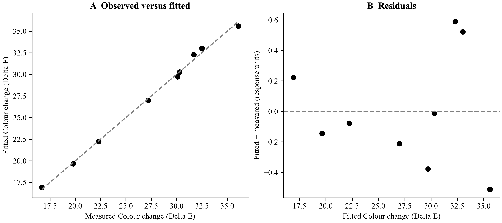
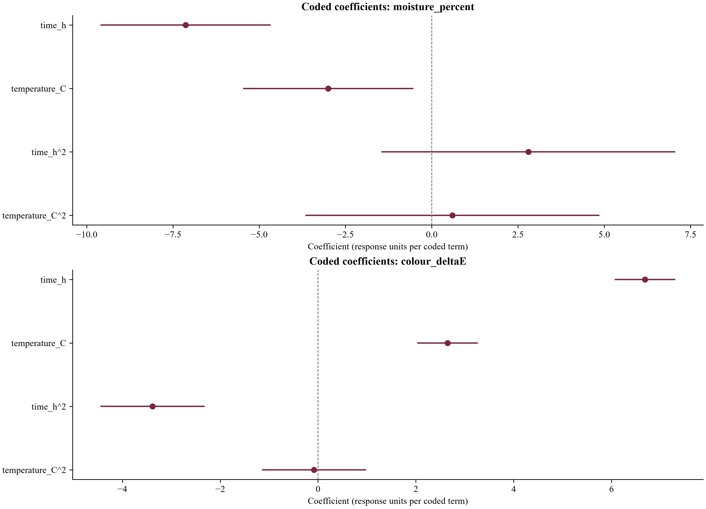
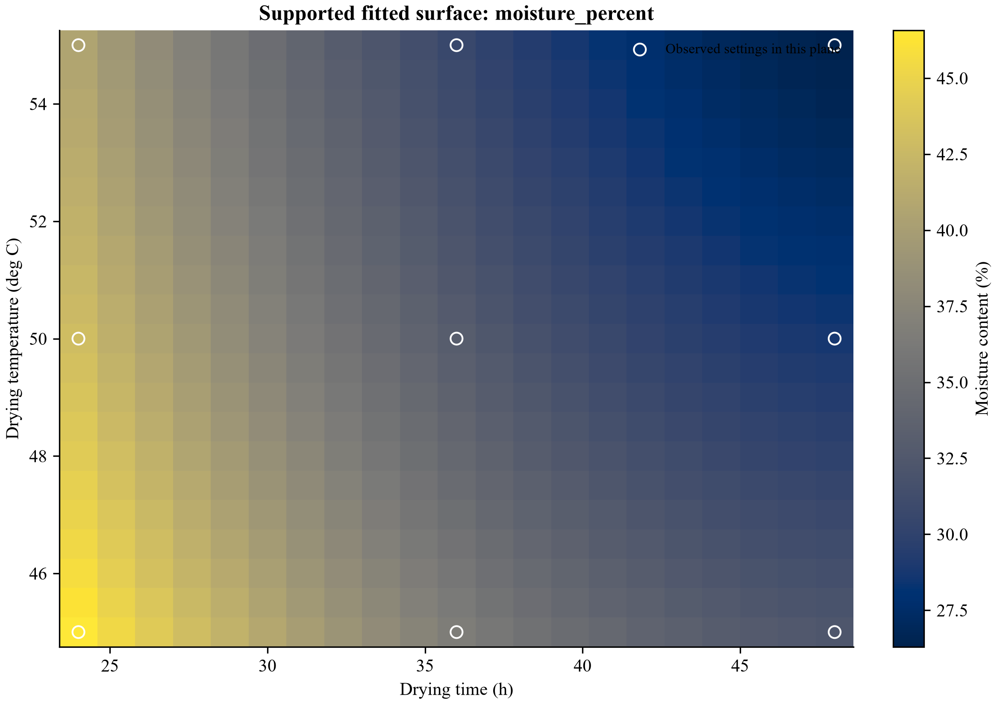
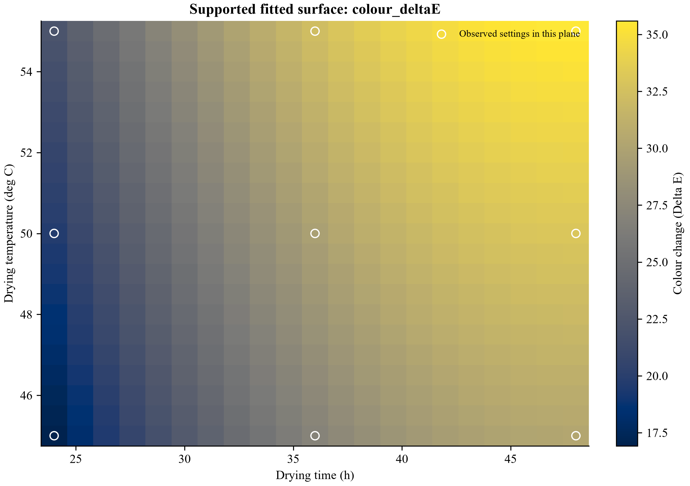
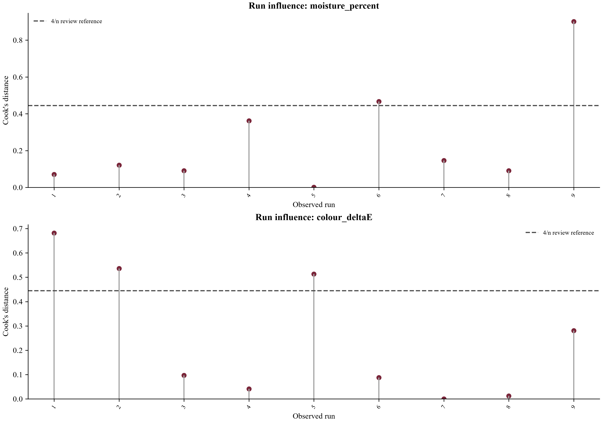
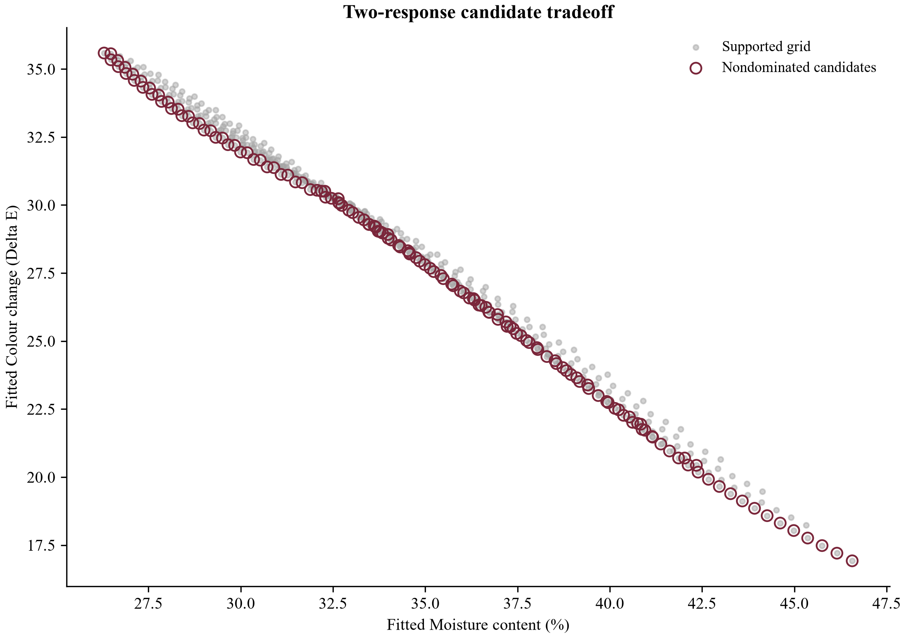

Input: banana_design.csv; 9 rows. Computation completed; evidence availability: complete.
Moisture content (%): 9 matched runs; fitted R² = 0.9527; residual sum of squares = 18.6533. These are in-sample fits, not independent confirmation experiments.
Colour change (Delta E): 9 matched runs; fitted R² = 0.9966; residual sum of squares = 1.14444. These are in-sample fits, not independent confirmation experiments.

Figure 1. In-sample fit and residuals for moisture_percent; these panels do not show independent prediction validation. All responses are retained in the result tables.

Figure 1. In-sample fit and residuals for colour_deltaE; these panels do not show independent prediction validation. All responses are retained in the result tables.

Dots show coefficients for non-intercept terms. Lines are the existing pointwise 95% coefficient intervals where estimable and independence was declared. An absent interval is not zero uncertainty. Full coefficients, including intercept, are retained in coefficients.csv.

Fitted values on the common supported grid. Open circles mark 9 observed settings in this plane. Blank cells are outside the observed design hull. The pixel boundaries show grid cells; predictions are defined at the grid centres. No independent confirmation or continuous optimum is implied.

Fitted values on the common supported grid. Open circles mark 9 observed settings in this plane. Blank cells are outside the observed design hull. The pixel boundaries show grid cells; predictions are defined at the grid centres. No independent confirmation or continuous optimum is implied.

Cook's distance measures fitted-model sensitivity under its assumptions. The 4/n line is a screening heuristic only; no observation is automatically removed. Internal studentization and leverage are exported in influence_diagnostics.csv.

141 of 441 supported grid candidates are nondominated for the declared directions. The open circles identify predicted tradeoffs, not a joint optimum or independent confirmation. All candidate conditions remain in candidate_tradeoff.csv.
Part 1/3.
| response | n | r2_fitted | adjusted_r2 | residual_ss | residual_df |
|---|---|---|---|---|---|
| moisture_percent | 9 | 0.9527 | 0.905399 | 18.6533 | 4 |
| colour_deltaE | 9 | 0.996575 | 0.993151 | 1.14444 | 4 |
Part 2/3.
| response | pure_error_ss | pure_error_df | lack_of_fit_ss | lack_of_fit_df | lack_of_fit_f |
|---|---|---|---|---|---|
| moisture_percent | None | 0 | None | None | None |
| colour_deltaE | None | 0 | None | None | None |
Part 3/3.
| response | lack_of_fit_p | leave_one_run_out_press |
|---|---|---|
| moisture_percent | None | 94.4325 |
| colour_deltaE | None | 5.79375 |
Part 1/2.
| response | source | ss | df | ms | f |
|---|---|---|---|---|---|
| moisture_percent | model | 375.707 | 4 | 93.9267 | 20.1415 |
| moisture_percent | residual | 18.6533 | 4 | 4.66333 | NaN |
| moisture_percent | total_corrected | 394.36 | 8 | 49.295 | NaN |
| colour_deltaE | model | 333.044 | 4 | 83.2611 | 291.01 |
| colour_deltaE | residual | 1.14444 | 4 | 0.286111 | NaN |
| colour_deltaE | total_corrected | 334.189 | 8 | 41.7736 | NaN |
Part 2/2.
| response | p | ss_convention | inference |
|---|---|---|---|
| moisture_percent | 0.00650029 | overall regression with intercept; no term-level SS | available under independent-run assumptions |
| moisture_percent | NaN | overall regression with intercept; no term-level SS | available under independent-run assumptions |
| moisture_percent | NaN | overall regression with intercept; no term-level SS | available under independent-run assumptions |
| colour_deltaE | 3.51022e-05 | overall regression with intercept; no term-level SS | available under independent-run assumptions |
| colour_deltaE | NaN | overall regression with intercept; no term-level SS | available under independent-run assumptions |
| colour_deltaE | NaN | overall regression with intercept; no term-level SS | available under independent-run assumptions |
Part 1/2.
| response | direction | factor::time_h | factor::temperature_C | predicted_response | prediction_interval95_low |
|---|---|---|---|---|---|
| moisture_percent | minimise | 48 | 55 | 26.3 | 18.8221 |
| colour_deltaE | minimise | 24 | 45 | 16.9222 | 15.07 |
Part 2/2.
| response | prediction_interval95_high | inside_observed_convex_hull | measured_confirmation |
|---|---|---|---|
| moisture_percent | 33.7779 | True | False |
| colour_deltaE | 18.7745 | True | False |
Complete tables are supplied as CSV; previews below retain the stated row and column limits.
| column | missing_cells | observed_cells | unique_observed |
|---|---|---|---|
| sample_id | 0 | 9 | 9 |
| time_h | 0 | 9 | 3 |
| temperature_C | 0 | 9 | 3 |
| moisture_percent | 0 | 9 | 9 |
| colour_deltaE | 0 | 9 | 9 |
| sample_id | reason |
|---|
| sample_id | factor | value |
|---|---|---|
| 1 | time_h | 36 |
| 1 | temperature_C | 55 |
| 2 | time_h | 48 |
| 2 | temperature_C | 50 |
| 3 | time_h | 24 |
| 3 | temperature_C | 45 |
| 4 | time_h | 24 |
| 4 | temperature_C | 50 |
| 5 | time_h | 48 |
| 5 | temperature_C | 55 |
| 6 | time_h | 36 |
| 6 | temperature_C | 45 |
| 7 | time_h | 48 |
| 7 | temperature_C | 45 |
| 8 | time_h | 24 |
| 8 | temperature_C | 55 |
| 9 | time_h | 36 |
| 9 | temperature_C | 50 |
| factor | low | centre | high | half_range |
|---|---|---|---|---|
| time_h | 24 | 36 | 48 | 12 |
| temperature_C | 45 | 50 | 55 | 5 |
| complete_runs | unique_settings | coefficients | rank | residual_df | condition_number |
|---|---|---|---|---|---|
| 9 | 9 | 5 | 5 | 4 | 4.24264 |
| model | terms | rank | estimable |
|---|---|---|---|
| linear | 3 | 3 | True |
| 2fi | 4 | 4 | True |
| additive_quadratic | 5 | 5 | True |
| quadratic | 6 | 6 | True |
| role | original_label | export_column |
|---|---|---|
| factors | time_h | factor::time_h |
| factors | temperature_C | factor::temperature_C |
| predictions | moisture_percent | prediction::moisture_percent |
| predictions | colour_deltaE | prediction::colour_deltaE |
| response | term | coefficient_coded | standard_error | ci95_low | ci95_high |
|---|---|---|---|---|---|
| moisture_percent | Intercept | 33.0333 | 1.60958 | 28.5644 | 37.5022 |
| moisture_percent | time_h | -7.13333 | 0.881602 | -9.58105 | -4.68561 |
| moisture_percent | temperature_C | -3 | 0.881602 | -5.44772 | -0.55228 |
| moisture_percent | time_h^2 | 2.8 | 1.52698 | -1.43958 | 7.03958 |
| moisture_percent | temperature_C^2 | 0.6 | 1.52698 | -3.63958 | 4.83958 |
| colour_deltaE | Intercept | 29.7222 | 0.398686 | 28.6153 | 30.8292 |
| colour_deltaE | time_h | 6.68333 | 0.218369 | 6.07704 | 7.28962 |
| colour_deltaE | temperature_C | 2.65 | 0.218369 | 2.04371 | 3.25629 |
| colour_deltaE | time_h^2 | -3.38333 | 0.378227 | -4.43346 | -2.33321 |
| colour_deltaE | temperature_C^2 | -0.0833333 | 0.378227 | -1.13346 | 0.966793 |
Part 1/2.
| sample_id | response | reference | prediction | residual | leverage |
|---|---|---|---|---|---|
| 1 | moisture_percent | 31.4 | 30.6333 | -0.766667 | 0.555556 |
| 2 | moisture_percent | 29.7 | 28.7 | -1 | 0.555556 |
| 3 | moisture_percent | 45.7 | 46.5667 | 0.866667 | 0.555556 |
| 4 | moisture_percent | 44.7 | 42.9667 | -1.73333 | 0.555556 |
| 5 | moisture_percent | 26.4 | 26.3 | -0.1 | 0.555556 |
| 6 | moisture_percent | 38.6 | 36.6333 | -1.96667 | 0.555556 |
| 7 | moisture_percent | 31.2 | 32.3 | 1.1 | 0.555556 |
| 8 | moisture_percent | 39.7 | 40.5667 | 0.866667 | 0.555556 |
| 9 | moisture_percent | 30.3 | 33.0333 | 2.73333 | 0.555556 |
| 1 | colour_deltaE | 31.7 | 32.2889 | 0.588889 | 0.555556 |
| 2 | colour_deltaE | 32.5 | 33.0222 | 0.522222 | 0.555556 |
| 3 | colour_deltaE | 16.7 | 16.9222 | 0.222222 | 0.555556 |
| 4 | colour_deltaE | 19.8 | 19.6556 | -0.144444 | 0.555556 |
| 5 | colour_deltaE | 36.1 | 35.5889 | -0.511111 | 0.555556 |
| 6 | colour_deltaE | 27.2 | 26.9889 | -0.211111 | 0.555556 |
| 7 | colour_deltaE | 30.3 | 30.2889 | -0.0111111 | 0.555556 |
| 8 | colour_deltaE | 22.3 | 22.2222 | -0.0777778 | 0.555556 |
| 9 | colour_deltaE | 30.1 | 29.7222 | -0.377778 | 0.555556 |
Part 2/2.
| sample_id | prediction_kind |
|---|---|
| 1 | fitted_on_same_runs |
| 2 | fitted_on_same_runs |
| 3 | fitted_on_same_runs |
| 4 | fitted_on_same_runs |
| 5 | fitted_on_same_runs |
| 6 | fitted_on_same_runs |
| 7 | fitted_on_same_runs |
| 8 | fitted_on_same_runs |
| 9 | fitted_on_same_runs |
| 1 | fitted_on_same_runs |
| 2 | fitted_on_same_runs |
| 3 | fitted_on_same_runs |
| 4 | fitted_on_same_runs |
| 5 | fitted_on_same_runs |
| 6 | fitted_on_same_runs |
| 7 | fitted_on_same_runs |
| 8 | fitted_on_same_runs |
| 9 | fitted_on_same_runs |
Showing 12 of 441 rows; the complete table is in candidates.csv.
| factor::time_h | factor::temperature_C | prediction::moisture_percent | prediction::colour_deltaE |
|---|---|---|---|
| 24 | 45 | 46.5667 | 16.9222 |
| 24 | 45.5 | 46.1527 | 17.2031 |
| 24 | 46 | 45.7507 | 17.4822 |
| 24 | 46.5 | 45.3607 | 17.7597 |
| 24 | 47 | 44.9827 | 18.0356 |
| 24 | 47.5 | 44.6167 | 18.3097 |
| 24 | 48 | 44.2627 | 18.5822 |
| 24 | 48.5 | 43.9207 | 18.8531 |
| 24 | 49 | 43.5907 | 19.1222 |
| 24 | 49.5 | 43.2727 | 19.3897 |
| 24 | 50 | 42.9667 | 19.6556 |
| 24 | 50.5 | 42.6727 | 19.9197 |
Part 1/2.
| response | group | n | reference_mean | prediction_mean | rmse |
|---|---|---|---|---|---|
| colour_deltaE | 1 | 1 | 31.7 | 32.2889 | 0.588889 |
| colour_deltaE | 2 | 1 | 32.5 | 33.0222 | 0.522222 |
| colour_deltaE | 3 | 1 | 16.7 | 16.9222 | 0.222222 |
| colour_deltaE | 4 | 1 | 19.8 | 19.6556 | 0.144444 |
| colour_deltaE | 5 | 1 | 36.1 | 35.5889 | 0.511111 |
| colour_deltaE | 6 | 1 | 27.2 | 26.9889 | 0.211111 |
| colour_deltaE | 7 | 1 | 30.3 | 30.2889 | 0.0111111 |
| colour_deltaE | 8 | 1 | 22.3 | 22.2222 | 0.0777778 |
| colour_deltaE | 9 | 1 | 30.1 | 29.7222 | 0.377778 |
| moisture_percent | 1 | 1 | 31.4 | 30.6333 | 0.766667 |
| moisture_percent | 2 | 1 | 29.7 | 28.7 | 1 |
| moisture_percent | 3 | 1 | 45.7 | 46.5667 | 0.866667 |
| moisture_percent | 4 | 1 | 44.7 | 42.9667 | 1.73333 |
| moisture_percent | 5 | 1 | 26.4 | 26.3 | 0.1 |
| moisture_percent | 6 | 1 | 38.6 | 36.6333 | 1.96667 |
| moisture_percent | 7 | 1 | 31.2 | 32.3 | 1.1 |
| moisture_percent | 8 | 1 | 39.7 | 40.5667 | 0.866667 |
| moisture_percent | 9 | 1 | 30.3 | 33.0333 | 2.73333 |
Part 2/2.
| response | mae | bias |
|---|---|---|
| colour_deltaE | 0.588889 | 0.588889 |
| colour_deltaE | 0.522222 | 0.522222 |
| colour_deltaE | 0.222222 | 0.222222 |
| colour_deltaE | 0.144444 | -0.144444 |
| colour_deltaE | 0.511111 | -0.511111 |
| colour_deltaE | 0.211111 | -0.211111 |
| colour_deltaE | 0.0111111 | -0.0111111 |
| colour_deltaE | 0.0777778 | -0.0777778 |
| colour_deltaE | 0.377778 | -0.377778 |
| moisture_percent | 0.766667 | -0.766667 |
| moisture_percent | 1 | -1 |
| moisture_percent | 0.866667 | 0.866667 |
| moisture_percent | 1.73333 | -1.73333 |
| moisture_percent | 0.1 | -0.1 |
| moisture_percent | 1.96667 | -1.96667 |
| moisture_percent | 1.1 | 1.1 |
| moisture_percent | 0.866667 | 0.866667 |
| moisture_percent | 2.73333 | 2.73333 |
Part 1/2.
| response | reference_bin | lower_reference | upper_reference | reference_mean | n |
|---|---|---|---|---|---|
| colour_deltaE | 0 | 16.7 | 22.3 | 19.6 | 3 |
| colour_deltaE | 1 | 22.3 | 30.1 | 28.65 | 2 |
| colour_deltaE | 2 | 30.1 | 31.7 | 31 | 2 |
| colour_deltaE | 3 | 31.7 | 36.1 | 34.3 | 2 |
| moisture_percent | 0 | 26.4 | 30.3 | 28.8 | 3 |
| moisture_percent | 1 | 30.3 | 31.4 | 31.3 | 2 |
| moisture_percent | 2 | 31.4 | 39.7 | 39.15 | 2 |
| moisture_percent | 3 | 39.7 | 45.7 | 45.2 | 2 |
Part 2/2.
| response | n_groups | rmse | group_rmse | bias |
|---|---|---|---|---|
| colour_deltaE | 3 | 0.159474 | 0.159474 | -7.10543e-15 |
| colour_deltaE | 2 | 0.30601 | 0.30601 | -0.294444 |
| colour_deltaE | 2 | 0.416481 | 0.416481 | 0.288889 |
| colour_deltaE | 2 | 0.516697 | 0.516697 | 0.00555556 |
| moisture_percent | 3 | 1.68138 | 1.68138 | 0.544444 |
| moisture_percent | 2 | 0.948098 | 0.948098 | 0.166667 |
| moisture_percent | 2 | 1.51969 | 1.51969 | -0.55 |
| moisture_percent | 2 | 1.37032 | 1.37032 | -0.433333 |
Part 1/2.
| sample_id | response | leverage | internal_studentized_residual | cooks_distance | reference_cooks_threshold |
|---|---|---|---|---|---|
| 1 | colour_deltaE | 0.555556 | 1.65142 | 0.681796 | 0.444444 |
| 2 | colour_deltaE | 0.555556 | 1.46447 | 0.536165 | 0.444444 |
| 3 | colour_deltaE | 0.555556 | 0.623177 | 0.0970874 | 0.444444 |
| 4 | colour_deltaE | 0.555556 | -0.405065 | 0.0410194 | 0.444444 |
| 5 | colour_deltaE | 0.555556 | -1.43331 | 0.513592 | 0.444444 |
| 6 | colour_deltaE | 0.555556 | -0.592018 | 0.0876214 | 0.444444 |
| 7 | colour_deltaE | 0.555556 | -0.0311588 | 0.000242718 | 0.444444 |
| 8 | colour_deltaE | 0.555556 | -0.218112 | 0.0118932 | 0.444444 |
| 9 | colour_deltaE | 0.555556 | -1.0594 | 0.280583 | 0.444444 |
| 1 | moisture_percent | 0.555556 | -0.532537 | 0.0708989 | 0.444444 |
| 2 | moisture_percent | 0.555556 | -0.694613 | 0.120622 | 0.444444 |
| 3 | moisture_percent | 0.555556 | 0.601998 | 0.0906004 | 0.444444 |
| 4 | moisture_percent | 0.555556 | -1.204 | 0.362402 | 0.444444 |
| 5 | moisture_percent | 0.555556 | -0.0694613 | 0.00120622 | 0.444444 |
| 6 | moisture_percent | 0.555556 | -1.36607 | 0.466539 | 0.444444 |
| 7 | moisture_percent | 0.555556 | 0.764075 | 0.145952 | 0.444444 |
| 8 | moisture_percent | 0.555556 | 0.601998 | 0.0906004 | 0.444444 |
| 9 | moisture_percent | 0.555556 | 1.89861 | 0.901179 | 0.444444 |
Part 2/2.
| sample_id | exceeds_reference_threshold | status |
|---|---|---|
| 1 | True | descriptive influence flag; retain observation |
| 2 | True | descriptive influence flag; retain observation |
| 3 | False | descriptive influence flag; retain observation |
| 4 | False | descriptive influence flag; retain observation |
| 5 | True | descriptive influence flag; retain observation |
| 6 | False | descriptive influence flag; retain observation |
| 7 | False | descriptive influence flag; retain observation |
| 8 | False | descriptive influence flag; retain observation |
| 9 | False | descriptive influence flag; retain observation |
| 1 | False | descriptive influence flag; retain observation |
| 2 | False | descriptive influence flag; retain observation |
| 3 | False | descriptive influence flag; retain observation |
| 4 | False | descriptive influence flag; retain observation |
| 5 | False | descriptive influence flag; retain observation |
| 6 | True | descriptive influence flag; retain observation |
| 7 | False | descriptive influence flag; retain observation |
| 8 | False | descriptive influence flag; retain observation |
| 9 | True | descriptive influence flag; retain observation |
Showing 24 of 441 rows; the complete table is in candidate_tradeoff.csv.
| factor::time_h | factor::temperature_C | prediction::moisture_percent | prediction::colour_deltaE | nondominated |
|---|---|---|---|---|
| 24 | 45 | 46.5667 | 16.9222 | True |
| 24 | 45.5 | 46.1527 | 17.2031 | True |
| 24 | 46 | 45.7507 | 17.4822 | True |
| 24 | 46.5 | 45.3607 | 17.7597 | True |
| 24 | 47 | 44.9827 | 18.0356 | True |
| 24 | 47.5 | 44.6167 | 18.3097 | True |
| 24 | 48 | 44.2627 | 18.5822 | True |
| 24 | 48.5 | 43.9207 | 18.8531 | True |
| 24 | 49 | 43.5907 | 19.1222 | True |
| 24 | 49.5 | 43.2727 | 19.3897 | True |
| 24 | 50 | 42.9667 | 19.6556 | True |
| 24 | 50.5 | 42.6727 | 19.9197 | True |
| 24 | 51 | 42.3907 | 20.1822 | True |
| 24 | 51.5 | 42.1207 | 20.4431 | True |
| 24 | 52 | 41.8627 | 20.7022 | True |
| 24 | 52.5 | 41.6167 | 20.9597 | True |
| 24 | 53 | 41.3827 | 21.2156 | True |
| 24 | 53.5 | 41.1607 | 21.4697 | True |
| 24 | 54 | 40.9507 | 21.7222 | True |
| 24 | 54.5 | 40.7527 | 21.9731 | True |
| 24 | 55 | 40.5667 | 22.2222 | False |
| 25.2 | 45 | 45.3213 | 18.2334 | False |
| 25.2 | 45.5 | 44.9073 | 18.5142 | False |
| 25.2 | 46 | 44.5053 | 18.7934 | False |
| capability | available | level | reason |
|---|---|---|---|
| input_quality | True | descriptive | Parsed rows and selected field availability are retained. |
| paired_descriptions | True | descriptive | Available finite reference/comparison pairs; no missing reference is invented. |
| fitted_model | True | fitting | Rank-supported coefficients are available. |
| held_out_evaluation | False | evaluation | No held-out model evaluation is supported by this run. |
| conditional_uncertainty | True | inference | Only the stated estimand and confirmed independence/variance assumptions support these intervals. |
{
"input_sha256": "501f23ba65f6e83efc8fc5a4019a13097d897727118051d4dd88f68de77e5682",
"factors": [
"time_h",
"temperature_C"
],
"candidate_columns": {
"factors": {
"time_h": "factor::time_h",
"temperature_C": "factor::temperature_C"
},
"predictions": {
"moisture_percent": "prediction::moisture_percent",
"colour_deltaE": "prediction::colour_deltaE"
}
},
"responses": [
"moisture_percent",
"colour_deltaE"
],
"model": "additive_quadratic",
"response_mode": "matched",
"grid_points_per_factor": 21,
"independent_runs_confirmed": true,
"candidate_status": "supported finite grid",
"software_source_sha256": "5c0dc36342d076126ecf4ab93b52c252873a213223e17ec732d253218d62a267",
"source_hash_definition": "SHA256 of sorted relative Python paths and file bytes, each terminated by a NUL byte",
"application": "matcheddoe",
"software_version": "0.5.2",
"configuration_schema_version": "1.2",
"call_parameters": {
"factors": [
"time_h",
"temperature_C"
],
"responses": [
"moisture_percent",
"colour_deltaE"
],
"id_col": "sample_id",
"model": "additive_quadratic",
"directions": {
"moisture_percent": "minimise",
"colour_deltaE": "minimise"
},
"grid_points": 21,
"independent_runs": true,
"reported_equations": null,
"response_mode": "matched",
"max_design_cells": 2000000,
"max_grid_candidates": 100000,
"column_metadata": {
"moisture_percent": {
"label": "Moisture content",
"unit": "%"
},
"colour_deltaE": {
"label": "Colour change",
"unit": "Delta E"
},
"time_h": {
"label": "Drying time",
"unit": "h"
},
"temperature_C": {
"label": "Drying temperature",
"unit": "deg C"
}
},
"input_name": "banana_design.csv",
"provenance": {
"kind": "bundled_example",
"example": "banana_design.csv"
}
},
"input_name": "banana_design.csv",
"columns": {
"sample_id": {
"label": "sample_id",
"unit": "not provided"
},
"time_h": {
"label": "Drying time",
"unit": "h"
},
"temperature_C": {
"label": "Drying temperature",
"unit": "deg C"
},
"moisture_percent": {
"label": "Moisture content",
"unit": "%"
},
"colour_deltaE": {
"label": "Colour change",
"unit": "Delta E"
}
},
"provenance": {
"kind": "bundled_example",
"example": "banana_design.csv",
"original_source": {
"id": "D05",
"repository_id": "87tfjn5s2h",
"version": 1,
"title": "Data from greenhouse solar drying using response surface methodology for the production of dried banana",
"creators": [
"Nopparat Suriyachai"
],
"doi": "10.17632/87tfjn5s2h.1",
"source_url": "https://data.mendeley.com/datasets/87tfjn5s2h/1",
"license": "CC-BY-4.0",
"license_url": "https://creativecommons.org/licenses/by/4.0/",
"checked_on": "2026-09-07",
"raw_data_included_in_delivery": false,
"downloads": [
{
"file": "Data accessibility.xlsx",
"url": "https://data.mendeley.com/public-files/datasets/87tfjn5s2h/files/c558268a-0c15-43f0-8598-b7f7b6a38d02/file_downloaded",
"bytes": 331168,
"sha256": "fc89166d2b63e68b398699b79bb75212d23247ffad5a92e2ef10259990c61d97"
}
],
"processed_examples_included": true
},
"transformations": "Nine distinct Data and Design settings; time=36+12*coded_time, temperature=50+5*coded_temperature; deposited moisture and colour responses. No independent repeated treatment settings; no pure-error estimate.",
"column_metadata": {
"moisture_percent": {
"label": "Moisture content",
"unit": "%"
},
"colour_deltaE": {
"label": "Colour change",
"unit": "Delta E"
},
"time_h": {
"label": "Drying time",
"unit": "h"
},
"temperature_C": {
"label": "Drying temperature",
"unit": "deg C"
}
},
"prepared_csv_sha256": "d92dc8b0cce05ba05c16987e7f4c94a99e83fa997944b8a8b45d2c6c29e62fbe",
"code_license": "MIT",
"data_license": "CC-BY-4.0"
},
"input_hash_definition": "SHA256 of parsed table serialized as canonical CSV; not original file bytes",
"n_input_rows": 9,
"computation_status": "completed",
"evidence_status": "complete",
"deterministic_protocol": {
"evaluation": "in-sample fitted design",
"candidate_grid_points_per_factor": 21
},
"input_preparation": {
"generated_row_id": null,
"row_id_meaning": "Source observation ID",
"import": {
"worksheet": null,
"header_row": 1,
"separator": ",",
"encoding": "utf-8-sig",
"notices": [],
"decimal": ".",
"missing_tokens": [],
"column_mapping": [
{
"position": 1,
"source_header": "sample_id",
"analysis_header": "sample_id"
},
{
"position": 2,
"source_header": "time_h",
"analysis_header": "time_h"
},
{
"position": 3,
"source_header": "temperature_C",
"analysis_header": "temperature_C"
},
{
"position": 4,
"source_header": "moisture_percent",
"analysis_header": "moisture_percent"
},
{
"position": 5,
"source_header": "colour_deltaE",
"analysis_header": "colour_deltaE"
}
],
"max_cells": 2000000,
"max_bytes": 52428800
},
"original_parsed_input_sha256": "501f23ba65f6e83efc8fc5a4019a13097d897727118051d4dd88f68de77e5682"
},
"diagnostics": [
{
"table": "group_diagnostics",
"question": "Which physical groups have the largest errors?",
"interpretation": "One summary per method and physical group; group means and within-group RMSE are different quantities. No rows are excluded.",
"rows": 18
},
{
"table": "reference_range_diagnostics",
"question": "Does error vary across the measured response range?",
"interpretation": "Up to four shared reference-quantile bins, determined after prediction for diagnosis only. Bin counts and group counts are retained; no uncertainty is inferred.",
"rows": 8
},
{
"table": "influence_diagnostics",
"question": "Are fitted coefficients sensitive to a particular observed run?",
"interpretation": "Internal studentization and Cook's distance require estimable residual variance and the independence declaration. 4/n is a review heuristic, never an automatic removal rule.",
"rows": 18
},
{
"table": "candidate_tradeoff",
"question": "Which supported candidates offer a tradeoff between the two response objectives?",
"interpretation": "Exact nondominance on the finite common candidate grid, using the declared objective directions. Fitted predictions, not measured confirmation or a continuous optimum.",
"rows": 441
}
],
"capabilities": [
{
"capability": "input_quality",
"available": true,
"level": "descriptive",
"reason": "Parsed rows and selected field availability are retained."
},
{
"capability": "paired_descriptions",
"available": true,
"level": "descriptive",
"reason": "Available finite reference/comparison pairs; no missing reference is invented."
},
{
"capability": "fitted_model",
"available": true,
"level": "fitting",
"reason": "Rank-supported coefficients are available."
},
{
"capability": "held_out_evaluation",
"available": false,
"level": "evaluation",
"reason": "No held-out model evaluation is supported by this run."
},
{
"capability": "conditional_uncertainty",
"available": true,
"level": "inference",
"reason": "Only the stated estimand and confirmed independence/variance assumptions support these intervals."
}
],
"evidence_summary": "Results with conditional uncertainty; review assumptions",
"import_options": {},
"export_config": {
"factors": [
"time_h",
"temperature_C"
],
"responses": [
"moisture_percent",
"colour_deltaE"
],
"id_col": "sample_id",
"model": "additive_quadratic",
"directions": {
"moisture_percent": "minimise",
"colour_deltaE": "minimise"
},
"grid_points": 21,
"independent_runs": true,
"reported_equations": null,
"response_mode": "matched",
"max_design_cells": 2000000,
"max_grid_candidates": 100000,
"column_metadata": {
"moisture_percent": {
"label": "Moisture content",
"unit": "%"
},
"colour_deltaE": {
"label": "Colour change",
"unit": "Delta E"
},
"time_h": {
"label": "Drying time",
"unit": "h"
},
"temperature_C": {
"label": "Drying temperature",
"unit": "deg C"
}
},
"input_name": "banana_design.csv",
"provenance": {
"kind": "bundled_example",
"example": "banana_design.csv"
},
"import_options": {}
}
}